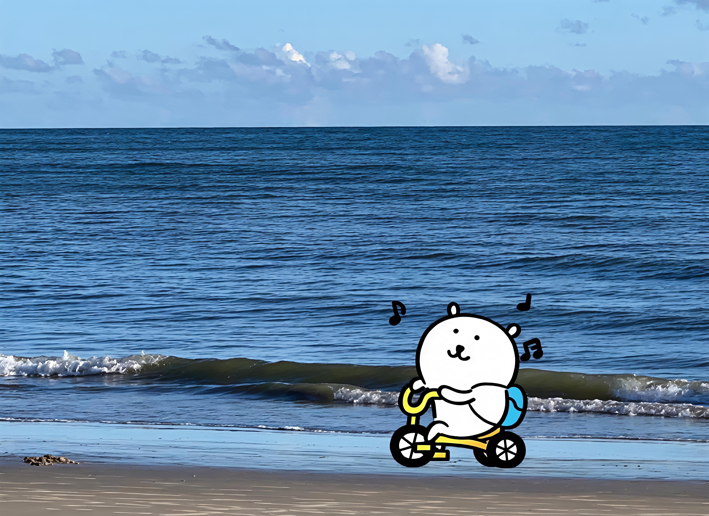
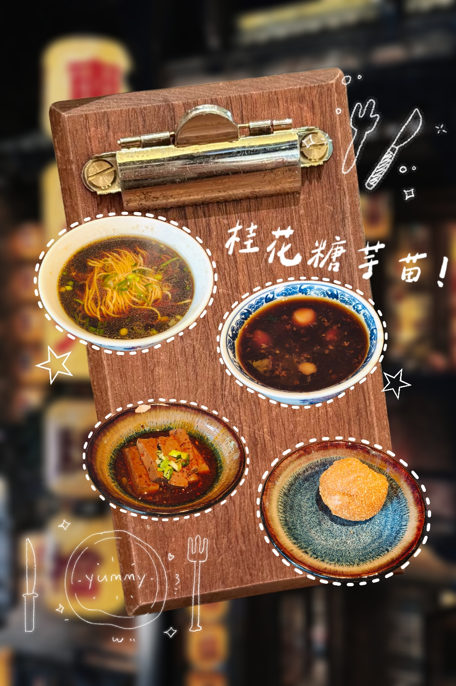
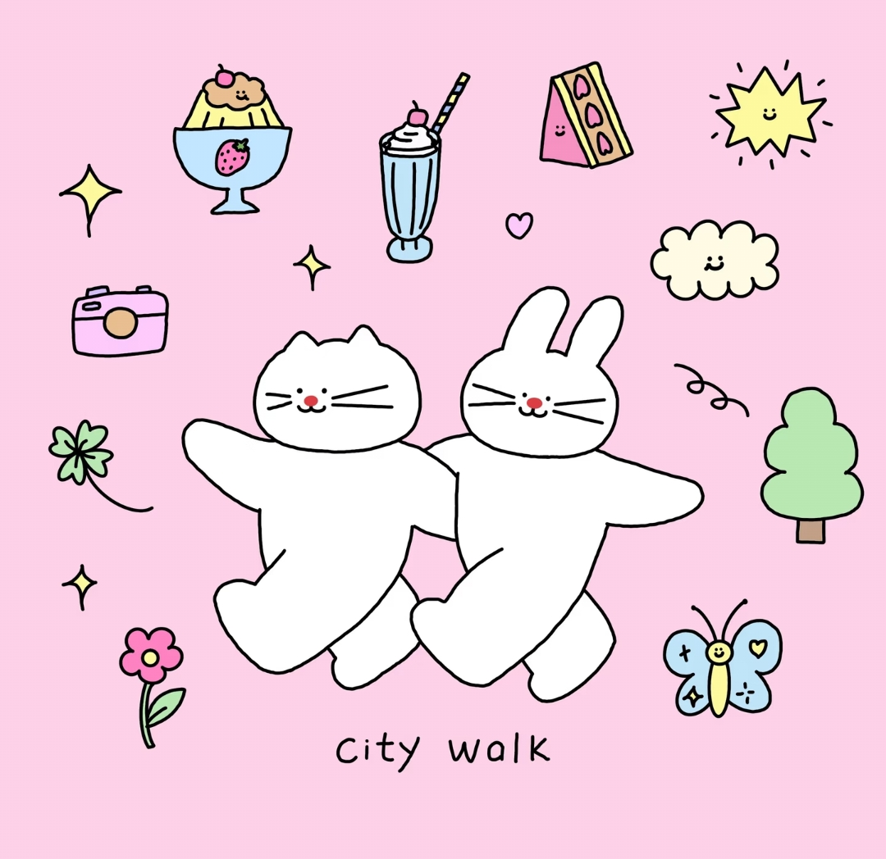
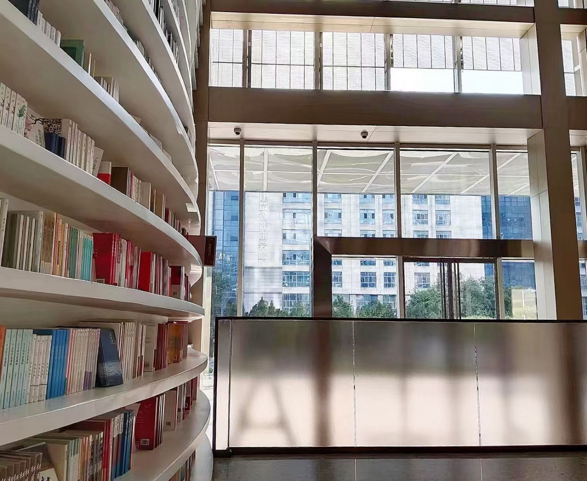
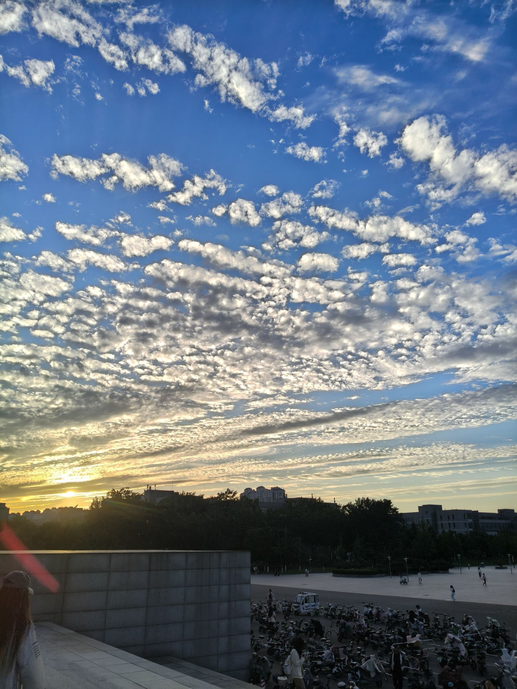

生活不必轰轰烈烈，更多是藏在普通日子里的温柔瞬间。一页页随笔，一张张照片，记录吃饭、散步、看书、发呆的时刻。
把转瞬即逝的日常保存下来，开心、疲惫、平淡、小确幸，全部留作回忆。这里属于个人的小小天地，写下心情，留存时光。
烟火气藏在三餐四季之间。清晨的早餐，傍晚的晚风，路边的花草，傍晚的晚霞，都是生活赠予的小浪漫。
慢慢感受，认真记录。不用追逐遥远的风景，身边的一草一木，一餐一饭，就足够值得珍藏。


好吃的食物总能治愈坏情绪，记录三餐，捕捉舌尖的幸福感。

黄昏出门走走，吹一吹晚风，消解一整天学习生活带来的疲惫。

在安静的午后翻开书本，跟着文字去往不同的世界，享受独处的宁静。

偶然抬头遇见漫天晚霞，大自然随手送出的温柔，值得按下快门保存。